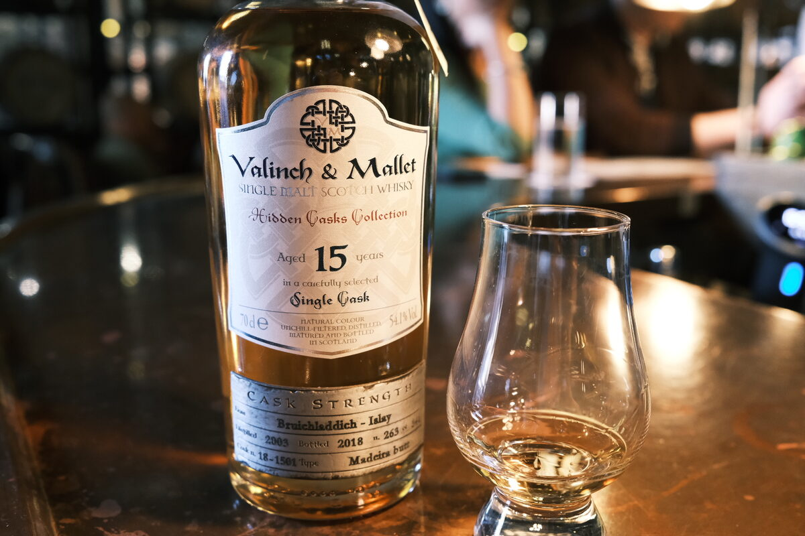

Bruichladdich 2003 Valinch and Mallet 15 years 54.1% (Madeira butt)
This one has a bit of a reputation.
Colour Gold.
Nose Disgusting. Butter bomb, white chocolate. Vomit and sulphur. Plasticky. Almonds, macadamias, really fatty. Eggs.
Palate Ashy, lemons. Plasticky again, vomit. Malt, butter. With water, icing sugar. Oily texture (really wishing it had no texture at this point).
Finish Hot, plasticky. Almonds and white chocolate. Long, unfortunately. With water, oak spices, tropical fruits.
Comments What a mess. Instructive as to sulphur. 64/100.

Posted by Dominic on 15 Jun 2021